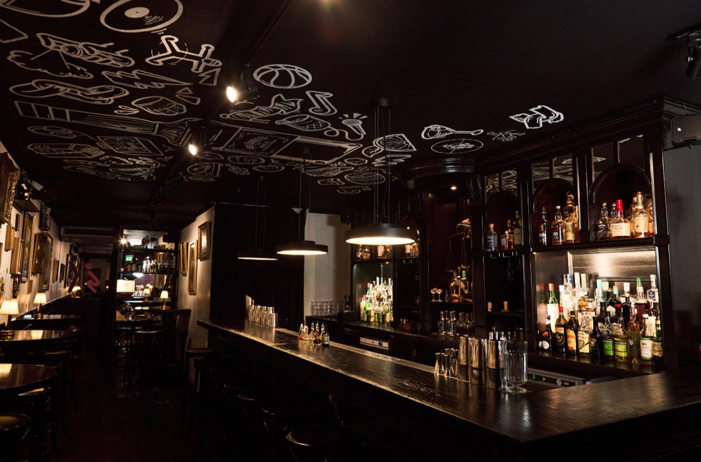

If you're looking for a curated experience, WOGO Cocktail Walks created not one but two self-guided tours that lead you through the city, each with its own vibe: the "Discovery Walk" for the hidden gems and the "Luxury Walk" for high-end elegance. Like every self-guided WOGO cocktail walk (from €29,95, also in Rotterdam, Utrecht and Groningen), your tables are reserved and a signature cocktail is waiting at every stop.
The Discovery Walk: hidden gems & craft spirit
1. Dutch Courage
Located on the historic Zeedijk, Dutch Courage is a tribute to the roots of cocktail culture: Genever. It's home to the world's first automated chilled Genever tasting machine, but during ACW, it's all about their creative flair. Expect a lively atmosphere, expert knowledge on Dutch spirits, and cocktails that bridge the gap between tradition and modern mixology.
2. Law & Order
Tucked away in the city center, Law & Order is a bartender's favorite. It's intimate, unpretentious, and laser-focused on the quality of the drink. Known for its rock-and-roll edge and impeccable technique, this is the place to go if you want a "no-nonsense" masterpiece in a glass.

3. Bar Oldenhof
Stepping into Bar Oldenhof feels like entering a private gentlemen's club from a bygone era. Think velvet seats, wood paneling, and a roaring fireplace. They are famous for their classic-style service and an incredible selection of whiskies and cigars. During Cocktail Week, they often host masterclasses, including a deep dive into Agave spirits this year.
The Luxury Walk: glamour & innovation
4. Fitz's Bar
Located inside the stunning Pillows Maurits at the Park hotel, Fitz's Bar is the epitome of "Roaring Twenties" glamour. Their menu is often divided into thematic chapters, like perfumes or medicinal herbs, making every drink a sensory journey. It's the perfect start (or end) to a night of high-end luxury.
5. CUE Amsterdam
CUE is a unique addition to the Amsterdam scene: a Japanese-inspired "listening bar". Here, the audio system is just as curated as the cocktail menu. It's an intimate basement space where high-fidelity sound meets precision mixology. If you like your cocktails served with a side of vinyl and soulful beats, this is your spot.
6. Prins & Aap
Situated within the Andaz Amsterdam Prinsengracht, Prins & Aap is a vibrant bar that celebrates Dutch creativity. The name reflects the whimsical, bold decor of the hotel. Their cocktail program is playful and daring, often using local ingredients in unexpected ways.
How to join the walk
Book a special WOGO X ACW cocktail walk to experience these bars at your own pace, following a digital map to guide your journey. It works exactly like our year-round walks; here's how a cocktail walk works, step by step.
Whether you choose the Discovery route (Dutch Courage, Law & Order, Bar Oldenhof) or the Luxury route (Fitz's, CUE, Prins & Aap), you're in for some of the best sips Amsterdam has to offer.
Cheers to Amsterdam Cocktail Week! 🍸✨